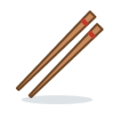
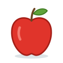
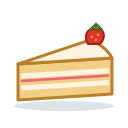
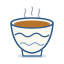

Unit 5
量詞Measure Words
一隻貓, 兩本書, 呢架車: count things by their shape, and say this and that.
 Learn
Learn
Measure words
個 隻 本 張 條 枝 架 件 杯 碗 對 and 啲, what each one counts, and 呢 and 嗰.

GameMeasure Sort
Give every thing its measure word, and sort things by shape. Is it 一條 or 一枝?

GameCount It
Count the pictures and say how many: 三隻貓, 兩本書.
GameWrite It
Write 本, 杯 and 有 stroke by stroke with your finger: trace, then from memory, then 默書 from what you hear.

WritingWriting Sheet
Print a practice sheet: each character stroke by stroke in Hong Kong order, to trace and then write.
GameTone Detective
Hear a measure word or a count and pick its tones.

SpeakingSay It Back
Record yourself and compare your tones with a native speaker's pitch curve.